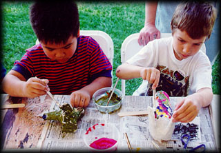

|
The "Lân" dance:The "Lân" dance symbolizes mobility, intelligence, and physical prowess. When people perform the "Lân" dance, they attempt to act out these ideals. |
| Children's Costume & Talent Competitions: Children between ages 5-12 will compete in traditional costumes as well as demonstrate their talent in dance, poetry, song, and interview. |  |
 |
Viet Arts Workshop:Various Bay Area artists
will hold fun-filled arts workshops for children of all ages.
Essay & Drawing Contests:On the day of the Festival, children will register to participate in these contests on the theme of Tet Trung Thu, or Mid-Autumn Festival. Winners will be announced in the evening and prizes will be awarded. |